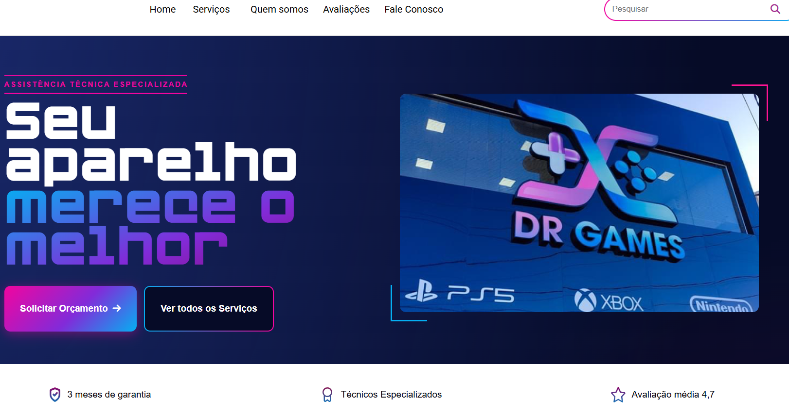

Dr. Games
Desenvolvimento Front-End para Assistência Técnica Real em Equipe Multidisciplinar

O Projeto & Cliente Real
Desenvolvido como projeto prático no curso de **Web Designer com foco em Front-End no Senac**, o objetivo principal foi criar a presença digital da **Dr. Games**, uma assistência técnica especializada em manutenção de videogames e eletrônicos.
Dores do Cliente
Necessidade de transmitir credibilidade técnica, expor serviços de reparo e facilitar o pedido de orçamentos online.
Equipe de 9 Pessoas
Trabalho colaborativo simulando um ambiente corporativo real, dividindo responsabilidades entre design, estrutura e interatividade.
Versionamento Git
Uso intenso do GitHub para controle de versionamento, fluxo de branches e resolução de conflitos de integração.
Foco em Mobile-First
Interface totalmente responsiva e otimizada para a navegação em dispositivos móveis e tablets.
O Desafio da Colaboração em Escala
Trabalhar com **9 desenvolvedores mexendo na mesma base de código** foi um dos maiores diferenciais deste projeto. Para garantir que o site mantivesse uma identidade coesa sem quebras no código, implementamos:
- Padrões claros de nomenclatura de classes CSS para evitar conflitos de estilo;
- Divisão de páginas e componentes (header, footer, formulários de contato e cards de serviço) por integrantes;
- Reuniões frequentes de alinhamento visual e revisão de código via Pull Requests;
- Foco na usabilidade do cliente final, garantindo uma navegação fluida e intuitiva.
O resultado foi a entrega de um produto funcional, alinhado às expectativas de um cliente real e com alta qualidade técnica.

Pilares do Desenvolvimento Front-End
Identidade Visual Gamer & Tech
Criação de uma interface com paleta de cores, tipografia e ícones que conversam diretamente com o público-alvo de games e tecnologia.
Estruturação Semântica
Uso de tags HTML5 semânticas para melhorar a acessibilidade e a indexação nos motores de busca (SEO).
Interatividade com DOM
Uso de JavaScript puro (Vanilla JS) para validação de formulários, menus interativos e elementos dinâmicos na interface.
Desafios do Projeto
- Gerenciar conflitos de merge (Merge Conflicts) no Git com 9 pessoas realizando commits simultâneos.
- Traduzir as necessidades técnicas de conserto de hardware em uma linguagem simples e visual para o usuário do site.
- Manter a consistência de design e responsividade em todas as resoluções de tela.
O que Aprendi
Este projeto consolidou minhas habilidades práticas em:
- Trabalho em equipe e comunicação técnica assertiva;
- Fluxos de trabalho com Git e GitHub em times de desenvolvimento;
- Levantamento de requisitos diretamente com o cliente final;
- Arquitetura de CSS limpo e componentização visual de layouts.